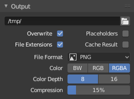
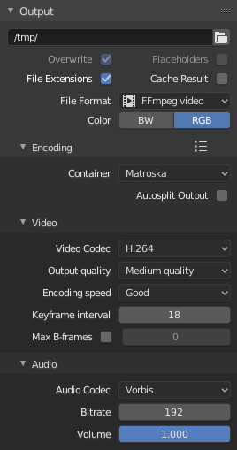

Output¶

Panel Output.¶
Panel này xác định nơi lưu các ảnh và animation đã render, cùng với định dạng xuất và cài đặt chất lượng của chúng.
Theo mặc định, các bản render animation được lưu tự động, còn ảnh render tĩnh thì không. Ảnh tĩnh phải được lưu thủ công từ Image Editor hoặc ghi ra bằng một File Output Node.
Việc tự động lưu kết quả render có thể được bật/tắt bằng hộp kiểm trong phần đầu panel.
Khi bật, Blender hoạt động theo cách chuẩn: bản render tĩnh (F12) không được lưu tự động, trong khi bản render animation (Ctrl-F12) được ghi ra đường dẫn xuất đã cấu hình.
Khi tắt, Blender không ghi kết quả render từ panel này mà thay vào đó dựa vào các hệ thống khác. Với bản render animation, nếu Video Sequencer đang hoạt động và không có phương thức xuất thay thế nào, một lỗi sẽ được báo. Nếu không, khi compositing được bật, các node File Output Node đang hoạt động sẽ được dùng để lưu kết quả. Nếu không có node như vậy, một lỗi sẽ được thông báo.
Các thao tác Playblast cũng cần một phương thức xuất đang hoạt động. Cả Render Playblast lẫn Render Playblast on Keyframes đều sẽ báo lỗi khi đầu ra render bị tắt trong panel này.
- File Path
Chọn vị trí để lưu các frame đã render.
Khi render một animation, số frame được thêm vào cuối tên file với bốn chữ số 0 đệm (vd:
image0001.png). Bạn có thể đặt kích thước đệm tùy chỉnh bằng cách thêm số ký tự#tương ứng ở bất kỳ đâu trong tên file (vd:image_##_test.pngsẽ thànhimage_01_test.png).Cài đặt này mở rộng Đường dẫn Tương đối, trong đó tiền tố
//đại diện cho thư mục của blend-file hiện tại.
- Lưu -- Phần mở rộng File
Thêm phần mở rộng file đúng theo từng kiểu file vào các file xuất.
- Lưu -- Cache Result
Lưu các view layer đã render và các pass của chúng vào một ảnh OpenEXR multi-layer. Compositor sau đó có thể dùng file này để cải thiện hiệu năng, đặc biệt cho các công đoạn compositing nặng.
Ảnh được lưu trong thư mục Render Cache như đã chỉ định trong File Paths Preferences. Bạn cũng có thể tải nó trở lại vào Render Result của Image Editor, kể cả sau khi đóng và mở lại Blender; xem Open Cached Render.
- Kiểu Media
Kiểu media sẽ lưu.
- Image:
Lưu từng đầu vào thành một file ảnh riêng. Mỗi đầu vào có thể dùng cài đặt định dạng ảnh riêng của nó.
- Multi-Layer EXR:
Lưu tất cả các đầu vào cùng nhau trong một file OpenEXR multi-layer duy nhất.
- Video:
Encode từng frame vào một container video. Các tùy chọn encode có thể được tìm thấy trong panel Encoding.
- Định dạng File Image
Chọn định dạng file ảnh để lưu. Tùy theo định dạng được dùng, các tùy chọn khác như kênh màu, độ sâu bit và mức nén sẽ khả dụng. Xem lưu ảnh để có danh sách các tùy chọn encode ảnh.
- Màu Image Multi-Layer EXR
Định dạng màu để lưu ảnh hoặc video. Cài đặt này được một số định dạng dùng để tối ưu lượng dữ liệu ghi vào file. Lưu ý, RGBA không khả dụng cho mọi định dạng ảnh, hãy kiểm tra danh sách bên trên để biết chi tiết.
- BW:
Lưu ảnh bằng màu thang độ xám.
- RGB:
Lưu các kênh đỏ, lục và xanh
- RGBA:
Lưu các kênh đỏ, lục, xanh và alpha.
- Chuỗi Ảnh -- Overwrite Image Multi-Layer EXR
Ghi đè lên các file đang có khi render.
- Chuỗi Ảnh -- Overwrite Image Multi-Layer EXR
Tạo các frame placeholder rỗng trong khi render.
Gợi ý
Render Farm đơn giản
Một cách đơn giản để nhiều máy tính cùng chia sẻ khối lượng công việc render là:
Thiết lập một thư mục dùng chung qua hệ thống file mạng.
Tắt Overwrite, bật Placeholders trong panel Output của Render.
Khởi động bao nhiêu máy tùy thích cùng render vào thư mục đó.
Color Management¶
Panel này kiểm soát cách Color Management được áp dụng khi lưu ảnh.
- Follow Scene:
Dùng cùng các cài đặt color management do Scene đang hoạt động xác định. Các thuộc tính này được định nghĩa trong Render Settings
- Override:
Dùng các cài đặt color management tùy chỉnh được xác định bởi các thuộc tính bên dưới trong panel; bỏ qua mọi cài đặt color management đặt ở cấp Scene.
Để có mô tả chi tiết về các thuộc tính color management, xem trang Color Management.
Mật độ Pixel¶
Mật độ pixel (thường gọi là PPI hoặc DPI) kiểm soát kích thước vật lý dự kiến của một ảnh. Thông số này thường được dùng cho in ấn hoặc cho kích thước vật lý khi ảnh được tải vào phần mềm dàn trang.
Mật độ X/Y được tính bằng cách dùng tỷ lệ khung hình X/Y của bản render, khiến các giá trị này hữu ích cho việc lưu tỷ lệ của các pixel không vuông.
Mật độ pixel là dữ liệu meta, không ảnh hưởng đến chất lượng ảnh.
Encoding¶
Tham khảo
- Panel:

Panel Encoding.¶
Tại đây bạn chọn container video, codec, và cài đặt nén muốn dùng. Với tất cả các lựa chọn nén này, luôn có sự đánh đổi giữa dung lượng file, tính tương thích giữa các nền tảng, và chất lượng phát lại. Trong phần đầu panel, bạn có thể dùng các preset, vốn chọn giúp bạn những cài đặt tối ưu cho kiểu đầu ra đó.
Mẹo
Khi xem System Console, bạn có thể thấy một phần kết quả xuất của quá trình encode. Bạn sẽ thấy nhiều hơn nữa nếu chạy Blender dưới dạng blender -d.
- Container
Container video hay kiểu file. Để xem danh sách tất cả các tùy chọn khả dụng, xem định dạng video.
- Autosplit Output
Nếu video của bạn rất lớn và vượt quá 2GiB, hãy bật Autosplit Output. Tùy chọn này sẽ tự động chia kết quả xuất thành nhiều file sau khi file đầu tiên đạt kích thước 2GiB.
Video¶
- Video Codec
Chọn phương pháp nén và encode. Để xem danh sách tất cả các tùy chọn khả dụng, xem định dạng video.
Ghi chú
Tiêu chuẩn
Một số container và codec không tương thích với nhau, nên nếu gặp lỗi, hãy kiểm tra xem container và codec của bạn có tương thích không. Giống như container và codec đôi khi không tương thích với nhau, một số codec không hoạt động với các kích thước tùy ý. Vì vậy, hãy cố gắng dùng các kích thước phổ biến hoặc tìm hiểu giới hạn của codec bạn định dùng.
- Color Depth
Giá trị số mũ (cơ số hai) cho biết bao nhiêu màu có thể được biểu diễn trong một kênh màu duy nhất. Độ sâu bit cao hơn cho phép nhiều màu hơn, giảm hiện tượng banding, và tăng độ chính xác. Tuy nhiên, độ sâu bit cao hơn cũng làm tăng mức sử dụng bộ nhớ theo cấp số nhân.
Lưu ý, không phải mọi định dạng file đều hỗ trợ mọi cấu hình độ sâu màu.
- 8:
Cho phép 256 mức mỗi kênh, tạo ra tổng cộng khoảng 16,7 triệu màu (RGB). Đây là định dạng phổ biến nhất cho đồ họa trên màn hình và video tiêu chuẩn.
- 10:
Cho phép 1.024 mức mỗi kênh, tạo ra tổng cộng hơn 1 tỷ màu (RGB).
Khả dụng cho các codec H.264, H.265 và AV1.
- 12:
Cho phép 4.096 mức mỗi kênh, tạo ra tổng cộng hơn 68 tỷ màu (RGB).
Khả dụng cho các codec H.265 và AV1.
- Profile ProRes
Xác định chất lượng, mức nén và data rate của video đã encode.
- ProRes 422 Proxy:
Data rate và chất lượng thấp nhất. Hữu ích cho việc chỉnh sửa offline hoặc các tình huống mà dung lượng lưu trữ và tốc độ là yếu tố then chốt.
- ProRes 422 LT:
Data rate thấp hơn ProRes 422 tiêu chuẩn với chất lượng chấp nhận được. Phù hợp để chỉnh sửa và xem bản nháp.
- ProRes 422:
Chất lượng tiêu chuẩn với sự cân bằng tốt giữa độ trung thực của ảnh và dung lượng file. Được khuyến nghị cho các quy trình làm việc thông thường.
- ProRes 422 HQ:
Chất lượng và data rate cao hơn ProRes 422 tiêu chuẩn. Được ưa chuộng cho phát sóng và hậu kỳ cao cấp.
- ProRes 4444:
Hỗ trợ kênh RGB và alpha ở độ phân giải đầy đủ. Phù hợp cho các pipeline compositing và hiệu ứng hình ảnh.
- ProRes 4444 XQ:
Định dạng ProRes chất lượng cao nhất. Giữ được chi tiết màu và dải động tối đa, lý tưởng cho color grading và VFX.
- Chất lượng Xuất
Đây là các preset của Rate.
- CRF Custom Quality
Constant Rate Factor (CRF). CRF càng nhỏ thì chất lượng video càng tốt nhưng dung lượng file càng lớn. Phạm vi giá trị CRF cho phép tùy thuộc vào codec. Cụ thể: 0-51 cho AV1, H.264 và H.265/HEVC; 0-63 cho WebP/VP9 và 1-31 cho MPEG-4/DivX. Giá trị CRF nằm ngoài phạm vi cho phép sẽ được giới hạn về giá trị cho phép gần nhất. Giá trị CRF bằng 0 cho kết quả encode không hủy dữ liệu (lossless).
- Encoding Speed
Các preset để chuyển đổi giữa encode nhanh (dung lượng file lớn hơn) và nén nhiều hơn (dung lượng file nhỏ hơn).
- Keyframe Interval
Số lượng ảnh trên mỗi Group of Pictures. Đặt bằng 0 cho "intra_only", tắt video liên khung hình. Số cao hơn thường cho file nhỏ hơn nhưng cần thiết bị mạnh hơn để phát lại.
Rate¶
- Bitrate
Đặt bit rate (chất lượng) trung bình, là số chữ số nhị phân trên mỗi frame. Xem thêm: FFmpeg -b:v.
- Minimum / Maximum
Các file video có thể dùng cái gọi là bit rate thay đổi (VBR). Cơ chế này dùng để nén ít hơn cho những frame cần nhiều dữ liệu hơn và nén nhiều hơn cho các frame ít dữ liệu. Điều này có thể được kiểm soát bằng các giá trị Minimum và Maximum.
- Buffer
Kích thước bộ đệm bitstream của decoder.
- Mux Rate
Bit rate tối đa của luồng đã multiplex. Multiplexing là quá trình kết hợp các luồng video và âm thanh riêng biệt thành một file duy nhất, giống như đóng gói một file video và một file âm thanh MP3 vào một file zip.
- Mux Packet Size
Giảm phân mảnh dữ liệu hoặc tải vượt của muxer tùy theo nguồn.
Audio¶
Các cài đặt này thay đổi cách âm thanh được xuất trong khi render. Để kiểm soát cách âm thanh được phát lại từ bên trong Blender, xem các cài đặt âm thanh trong Preferences.
- Audio Codec
Định dạng âm thanh sẽ dùng. Để xem danh sách tất cả các tùy chọn khả dụng, xem định dạng video.
- Audio Channels
Số lượng "vị trí" nguồn âm thanh cần encode.
- Mono:
Xuất một kênh âm thanh duy nhất.
- Stereo:
Xuất hai kênh âm thanh; thường là kênh trái và kênh phải.
- 4 Channels:
Xuất bốn kênh âm thanh.
- 5.1 Surround:
Xuất năm kênh âm thanh kèm một kênh LFE.
- 7.1 Surround:
Xuất bảy kênh âm thanh kèm một kênh LFE.
- Sample Rate
Đặt tốc độ lấy mẫu của âm thanh.
- Bitrate
Với mỗi codec, bạn có thể kiểm soát bit rate (chất lượng) của âm thanh trong phim. Bit rate cao hơn cho file lớn hơn, phát trực tuyến kém hơn nhưng nghe tốt hơn. Hãy dùng lũy thừa của 2 để đảm bảo tương thích.
- Volume
Đặt âm lượng xuất của âm thanh.
Mẹo¶
Mẹo
Lựa chọn định dạng video phụ thuộc vào việc bạn định làm gì.
Không khuyến nghị render trực tiếp sang định dạng video ngay từ đầu. Nếu gặp sự cố trong khi render, file có thể không phát được nữa và bạn sẽ phải render lại toàn bộ các frame từ đầu. Nếu bạn trước tiên render ra một bộ ảnh tĩnh như định dạng PNG mặc định hoặc OpenEXR chất lượng cao hơn (có thể giữ dữ liệu pixel HDR), bạn có thể kết hợp chúng dưới dạng một Image Strip trong Video Sequencer. Theo cách này, bạn dễ dàng:
Khởi động lại việc render từ chỗ (frame) mà sự cố đã xảy ra.
Thử nghiệm các tùy chọn encode video khác nhau trong vài giây thay vì vài phút hoặc vài giờ, vì encode thường nhanh hơn nhiều so với render scene 3D.
Tận hưởng các tính năng còn lại của Video Sequencer, chẳng hạn như thêm các Image Strip từ các lần render trước, âm thanh, các đoạn video clip v.v.
Mẹo
Bạn không nên xử lý hậu kỳ một file đã nén lossy (có hủy dữ liệu) vì các artefact do nén có thể trở nên dễ thấy. Nén lossy nên được dành làm 'định dạng phân phối' cuối cùng.